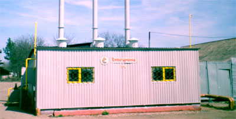

Автономные блочные мобильные модульные котельные МТК
Автономная модульная мобильная блочная котельная МТК-200
Мобильная котельная МТК (модуль тепловой контейнерный) представляет собой единый комплекс, работающий в автоматическом режиме, предназначенный для автономного отопления зданий высотой до 15 метров и общей площадью до 6000 квадратных метров. В специально подготовленном контейнере с двойными стенками размещены котлы КЖВГ соответствующей мощности с автоматическими газогорелочными устройствами и предохранительными клапанами, насосной станцией, водяной арматурой, водяным фильтром-грязевиком, электрощитом, осветительной арматурой. В комплект автономной мобильной блочной модульной котельной также входят дымовые трубы. За счет установки теплового модуля непосредственно у отапливаемого объекта заказчик избавляется от потерь тепла в теплотрассе, самостоятельно регулирует режим работы модуля. Цена одной гигокалории, полученной от автономной мобильной котельной в три раза меньше цены гигокалории, полученной от централизованной котельной. Срок окупаемости мобильной блочной котельной от 3 до 6 месяцев! Габаритные размер тепловых модулей позволяют без проблем транспортировать их автомобильным транспортом. Технические данные нескольких вариантов автономных мобильных котельных приведены ниже.
| Наименование | МТК-200 | МТК-400 | МТК-600 |
|---|---|---|---|
| Номинальная мощность, кВт | 200 | 400 | 600 |
| Количество котлов, штук | 2 | 2 | 3 |
| Тип котлов | КЖВГ-100 | КЖВГ-200 | КЖВГ-200 |
| Диапазон регулирования мощности (%) | 50-100 | 25-100 | 16-100 |
| КПД при номинальной мощности (%) не менее | 90 | 90 | 90 |
| Параметры теплоносителя: | |||
| - абсолютное давление, МПа (кг/кв.см.) | 0,3 (3) | 0,3 (3) | 0,3 (3) |
| - максимальная температура воды, град.С | 90 | 90 | 90 |
| - рачсчетная температура обратной воды | 60 | 60 | 60 |
| Количество воды, перекачиваемой насосами через котлы для получения максимальной мощности, кг/час | 5200 | 10400 | 15600 |
| Номинальный расход газа, куб.м/час | 20,4 | 40,8 | 61,2 |
| Давление газа на входе в котельную, кПа | 1,3-2,0 | 1,3-2,0 | 1,3-2,0 |
| Номинальное напряжение электросети, В | 380 | 380 | 380 |
| Установленная электрическая мощность, кВт | 3 | 8 | 12 |
| Масса без воды, кг, не более | 2700 | 5000 | 7000 |
| Габаритные размеры, мм: - длина | 3750 | 5000 | 7500 |
| - ширина | 2200 | 2500 | 2500 |
| - высота | 2500 | 2700 | 2700 |

Мобильная котельная МТК-600, установленная на заводе
Для отопления всех заводских зданий у нас установлена автономная мобильная котельная МТК-600 собственного производства, которую мы с удовольствием демонстрируем нашим будущим покупателям. При желании заказчика ОАО "Станкотерм" на основе базовой модели мобильной топочной котельной может изготовить полнокомплектный вариант с дополнительным утеплением стен и крыши, с дополнительным комплектом дымовых труб диаметром 180 или 250 мм, применяемых при установке модулей к многоэтажным зданиям; с газовой арматурой и газовыми трубопроводами; оснастить котельную сигнализацией по газообеспечению, пожарной сигнализацией, газоанализаторами и т.п. В этом случае цена котельной будет увеличена на 30-40%.
| Мощность котельной | Тип и количество котлов - шт. | Длина | Ширина | Высота |
|---|---|---|---|---|
| 0,05 МВт | КЖВГ-50 - 1 | 2500 мм | 2200 мм | 2600 мм |
| 0,1 МВт | КЖВГ-100 - 1 | 3750 мм | 2200 мм | 2600 мм |
| 0,2 МВт | КЖВГ-100 - 2 | 3750 мм | 2200 мм | 2600 мм |
| 0,3 МВт | КЖВГ-100 - 3 | 5000 мм | 2200 мм | 2600 мм |
| 0,4 МВт | КЖВГ-200 - 2 | 5000 мм | 2500 мм | 2700 мм |
| 0,6 МВт | КЖВГ-200 - 3 | 7500 мм | 2500 мм | 2700 мм |
Цены на автономные мобильные блочные модульные котельные договорные и зависят от комплектации и объема заказа изделий. С каждым покупателем заключается договор, в котором оговаривается комплектация котельной, ее цена и сроки изготовления.